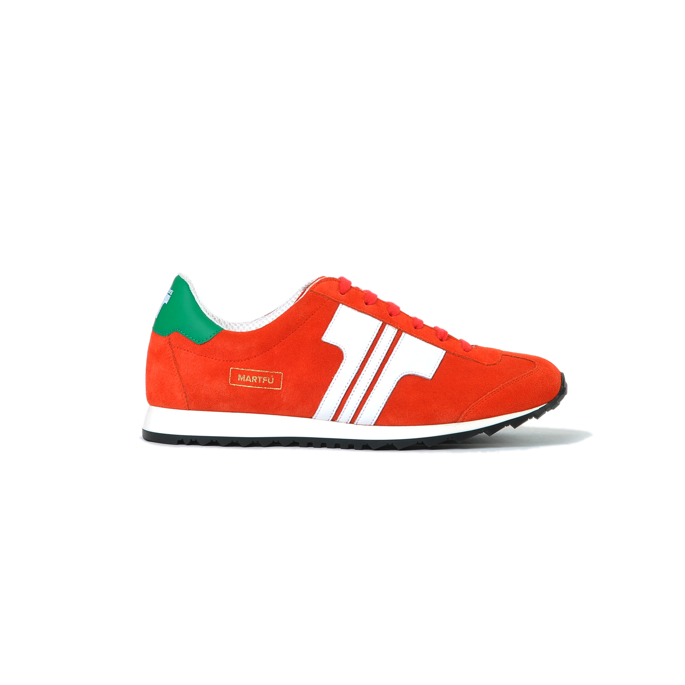

Minden időben tisza cipőben
Története
Thomas Bata az 1930-as években kívánt cipőgyárat létesíteni valahol Magyarországon. A helyszínt illetően a választása Martfűre esett, ahol vízi, közúti és vasúti csomópont található. A gyár területét 1939-ben vásárolta meg. A vállalat elődje Cikta Rt. néven kezdte a termelést, 1942-ben. A második világháború éveiben sok változás történt a vezetésben, melyek a termelést nem befolyásolták. A háborút követően a gyárnak nagy veszteségei voltak, gumitalpú cipők helyett fatalpúakat gyártottak. 1949 augusztusában az államosított Cikta Rt.-t Tisza Cipőgyár Nemzeti Vállalatra nevezték át.
Az 1950-60-as években a gyár főleg a magyarországi kereslet kielégítésére termelt, export csak a szocialista országokba történt. Nagy mennyiségben gyártottak bakancsokat a Honvédelmi és a Belügyminisztériumnak, illetve a Munkásőrségnek. 1970 decemberében a Tisza Cipőgyár beadta új logójának engedélyezési kérelmét, amelyet 1971 első hónapjaiban hagytak jóvá.
Ezt követően kezdődött meg a gyártása, mely sok fiatal kedvenc cipőjévé vált. A Tisza Cipőgyár sportcipő vonala meghozta a hozzá fűzött reményeket. 1971 májusától a németországi Adidas is a Tisza Cipőgyárral állíttatta elő a La Paz modellnévre hallgató futballcipőit.
Tovább olvasomLegnépszerűbb termékek
Öv |
Compact |

Pulóver |

Martfű |
Üzletek (néhány)
| Neve | cime |
| ASTORIA | 1075 Budapest, Károly körút 1. |
| WESTEND | 1062 Budapest, Váci út 1-3. |
| GYÖR ÁRKÁD | 9027 Gyór, Budai út 1. |
| SIÓFOK | 8600 Siófok, F6 u. 174-176. |